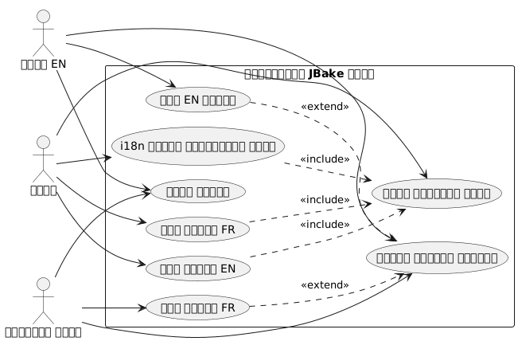
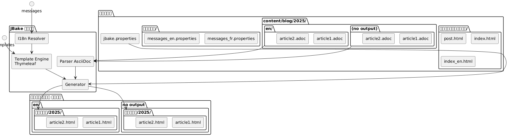
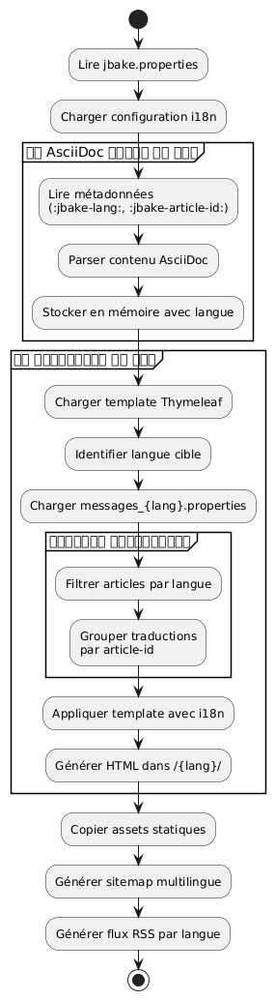

थाइमलीफ़ के साथ JBake स्थिर साइट का अंतर्राष्ट्रीयकरण
Publié le 20 October 2025
परिचय
एक स्थिर साइट का अंतर्राष्ट्रीयकरण (i18n) पहली नज़र में जटिल लग सकता है, लेकिन JBake के साथ Thymeleaf को मिलाकर बहुभाषी साइट बनाने के लिए सुंदर समाधान प्रदान करता है। इस लेख में, मैं आपको दिखाऊँगा कि मैंने अपने ब्लॉग पर i18n कैसे लागू किया, जिसमें टेम्पलेटिंग और कई भाषाओं में लेख प्रबंधन दोनों शामिल हैं।
उपयोग केस आरेख (Use Case)

अंतर्राष्ट्रीयीकरण की वास्तुकला
हमारा दृष्टिकोण दो स्तम्भों पर आधारित है :
-
टेम्पलेटिंग का i18n: Thymeleaf संदेश फाइलों का उपयोग इंटरफ़ेस तत्वों के लिए
-
सामग्री का अंतर्राष्ट्रीयीकरण: भाषा के अनुसार आलेखों का संगठन एक समर्पित फ़ोल्डर संरचना में
संरचना आरेख (फ़ाइल संगठन)

इस दृष्टिकोण क्यों?
यह पृथक्करण करने की अनुमति देता है :
-
भाषा चाहे जैसी भी हो, इंटरफ़ेस में स्थिरता बनाए रखें
-
सामग्री और लेख अनुवाद को स्वतंत्र रूप से प्रबंधित करें
-
बड़े रिफैक्टरिंग किए बिना नयी भाषाएँ जोड़ने को सुगम बनाना
-
केवल कुछ भाषाओं में उपलब्ध लेखों की अनुमति दें
घटक आरेख

I18n Thymeleaf के साथ टेम्प्लेटिंग
Structure des fichiers de messages
पहला चरण समर्थित प्रत्येक भाषा के लिए गुण फ़ाइलें बनाने से शुरू होता है :
src/jbake/templates/
├── messages.properties # Fallback par défaut
├── messages_fr.properties # Français
├── messages_en.properties # Anglais
└── messages_de.properties # Allemandसंदेश फ़ाइलों की सामग्री
यहाँ एक फ़ाइल का उदाहरण है`messages_fr.properties`(No output - empty string)
# Navigation
nav.home=Accueil
nav.blog=Blog
nav.about=À propos
nav.contact=Contact
# Articles
article.readmore=Lire la suite
article.published=Publié le
article.tags=Étiquettes
article.also.available=Également disponible en
# Interface
site.title=Mon Blog Technique
site.description=Partage de connaissances et expériences
footer.copyright=© 2025 Tous droits réservés
search.placeholder=Rechercher un article...और उसका अंग्रेजी समकक्ष`messages_en.properties`(No output)
# Navigation
nav.home=Home
nav.blog=Blog
nav.about=About
nav.contact=Contact
# Articles
article.readmore=Read more
article.published=Published on
article.tags=Tags
article.also.available=Also available in
# Interface
site.title=My Tech Blog
site.description=Sharing knowledge and experiences
footer.copyright=© 2025 All rights reserved
search.placeholder=Search articles...टेम्पलेट्स में उपयोग
अपने Thymeleaf टेम्पलेट्स में, सिंटैक्स का उपयोग करें`#{}`संदेशों तक पहुँचने के लिए :
<!DOCTYPE html>
<html xmlns:th="http://www.thymeleaf.org">
<head>
<title th:text="#{site.title}">Mon Blog</title>
<meta name="description" th:content="#{site.description}" />
</head>
<body>
<nav>
<a th:href="@{/}" th:text="#{nav.home}">Accueil</a>
<a th:href="@{/blog/}" th:text="#{nav.blog}">Blog</a>
<a th:href="@{/about.html}" th:text="#{nav.about}">À propos</a>
</nav>
<footer>
<p th:text="#{footer.copyright}">Copyright</p>
</footer>
</body>
</html>अनुक्रम आरेख - i18n समाधान
Failed to generate image: PlantUML preprocessing failed: [From <input> (line 4) ]
@startuml
actor Auteur
participant JBake
participant "AsciiDoc
^^^^^
Syntax Error? (Assumed diagram type: sequence)
@startuml
actor Auteur
participant JBake
participant "AsciiDoc
पार्सर" as parser
participant "Thymeleaf
इंजन" as thymeleaf
participant "I18n\nसमाधानकर्ता" as i18n
database "messages_*.properties" as messages
Auteur -> JBake: jbake -b
activate JBake
JBake -> parser: Lire article.fr.adoc
activate parser
parser --> JBake: Contenu + métadonnées\n(lang=fr, article-id=xyz)
deactivate parser
JBake -> parser: Lire article.en.adoc
activate parser
parser --> JBake: Contenu + métadonnées\n(lang=en, article-id=xyz)
deactivate parser
JBake -> thymeleaf: Générer page FR
activate thymeleaf
thymeleaf -> i18n: Résoudre #{nav.home}
activate i18n
i18n -> messages: Lire messages_fr.properties
messages --> i18n: "स्वागत"
i18n --> thymeleaf: "स्वागत"
deactivate i18n
thymeleaf -> JBake: Rechercher traductions\n(article-id=xyz, lang!=fr)
JBake --> thymeleaf: article.en.html trouvé
thymeleaf --> JBake: /fr/blog/article.html
deactivate thymeleaf
JBake -> thymeleaf: Générer page EN
activate thymeleaf
thymeleaf -> i18n: Résoudre #{nav.home}
activate i18n
i18n -> messages: Lire messages_en.properties
messages --> i18n: "होम"
i18n --> thymeleaf: "होम"
deactivate i18n
thymeleaf -> JBake: Rechercher traductions\n(article-id=xyz, lang!=en)
JBake --> thymeleaf: article.fr.html trouvé
thymeleaf --> JBake: /en/blog/article.html
deactivate thymeleaf
JBake --> Auteur: Site généré
deactivate JBake
@enduml
JBake में लोकेल कॉन्फ़िगरेशन
आपकी फ़ाइल में`jbake.properties`, डिफ़ॉल्ट locale सेट करें :
# Locale par défaut
thymeleaf.locale=fr
# Encodage
template.encoding=UTF-8लेखों का I18n: फ़ोल्डर द्वारा संगठन
फ़्लो (Flow) का प्रवाह आरेख - निर्माण

फ़ोल्डर संरचना
फ़ाइल नामों में सफ़िक्स का उपयोग करने के बजाय, मैंने स्पष्टता और रखरखाव में सुधार लाने वाले फ़ोल्डर आधारित संगठन को चुना है :
content/blog/
├── 2024/
│ ├── fr/
│ │ ├── introduction-jbake.adoc
│ │ ├── guide-thymeleaf.adoc
│ │ └── astuces-asciidoc.adoc
│ └── en/
│ ├── introduction-jbake.adoc
│ ├── thymeleaf-guide.adoc
│ └── asciidoc-tips.adoc
└── 2025/
├── fr/
│ └── internationalisation-jbake.adoc
└── en/
└── jbake-internationalization.adocइस दृष्टिकोण के फ़ायदे
इस संरचना के कई फायदे हैं:
-
स्पष्ट पृथक्करण: प्रत्येक भाषा का अपना स्थान है
-
लचीला नामकरण: फ़ाइलें भाषा के अनुसार विभिन्न नाम रख सकती हैं
-
स्केलेबिलिटी: एक नई भाषा जोड़ना आसान है
-
प्राकृतिक संगठन: JBake के समयबद्ध तर्क का पालन करता है
लेखों के मेटाडेटा
हर लेख में अनुवादों के बीच संबंध स्थापित करने के लिए मेटाडेटा शामिल होना चाहिए। यहाँ एक उदाहरण दिया गया है :
फ़्रेंच संस्करण(2025/fr/internationalisation-jbake.adoc) :
= Internationalisation d'un site statique JBake
:jbake-type: post
:jbake-status: published
:jbake-date: 2025-10-20
:jbake-lang: fr
:jbake-article-id: jbake-i18n-thymeleaf
:jbake-tags: jbake, thymeleaf, i18n
:jbake-description: Guide pour mettre en place l'i18n avec JBakeअंग्रेज़ी संस्करण(2025/en/jbake-internationalization.adoc) :
= Internationalizing a JBake Static Site
:jbake-type: post
:jbake-status: published
:jbake-date: 2025-10-20
:jbake-lang: en
:jbake-article-id: jbake-i18n-thymeleaf
:jbake-tags: jbake, thymeleaf, i18n
:jbake-description: Guide to implement i18n with JBake| एट्रिब्यूट`:jbake-article-id:`यह महत्वपूर्ण है: यह एक ही लेख के विभिन्न अनुवादों को जोड़ने की अनुमति देता है। |
यूआरएल कॉन्फ़िगरेशन
में`jbake.properties`, URL पैटर्न को भाषा शामिल करने के लिए कॉन्फ़िगर करें :
# Pattern d'URL avec langue
post.permalink.pattern=:lang/blog/:year/:name.html
# Langue par défaut
site.default.lang=frइससे इस प्रकार के URL उत्पन्न होंगे :
-
/fr/blog/2025/internationalisation-jbake.html -
/en/blog/2025/jbake-internationalization.html
बहुभाषी प्रदर्शन के लिए टेम्प्लेट
भाषा चयनकर्ता के साथ लेख टेम्पलेट
एक टेम्प्लेट बनाएँ`post.html`disponible अनुवाद दिखाता है :
<!DOCTYPE html>
<html xmlns:th="http://www.thymeleaf.org">
<head>
<title th:text="${content.title}">Article</title>
</head>
<body>
<article>
<header>
<h1 th:text="${content.title}">Titre</h1>
<div class="article-meta">
<time th:text="${#dates.format(content.date, 'dd MMMM yyyy')}"
th:attr="datetime=${#dates.format(content.date, 'yyyy-MM-dd')}">
Date
</time>
<!-- Sélecteur de traductions -->
<div class="translations" th:if="${content['article-id']}">
<span th:text="#{article.also.available}">Aussi disponible en :</span>
<ul class="language-list">
<li th:each="post : ${published_posts}"
th:if="${post['article-id'] == content['article-id'] and post.lang != content.lang}">
<a th:href="${post.uri}"
th:text="${post.lang.toUpperCase()}">
LANG
</a>
</li>
</ul>
</div>
</div>
</header>
<div class="content" th:utext="${content.body}">
Contenu de l'article
</div>
<footer class="article-footer">
<div class="tags" th:if="${content.tags}">
<span th:text="#{article.tags}">Étiquettes :</span>
<span th:each="tag : ${content.tags}">
<a th:href="@{/tags/{tag}.html(tag=${tag})}"
th:text="${tag}">tag</a>
</span>
</div>
</footer>
</article>
</body>
</html>भाषा द्वारा फ़िल्टर किया गया सूचकांक
प्रत्येक भाषा के लिए इंडेक्स टेम्प्लेट बनाएँ :
index.html(फ़्रेंच सूचक) :
<!DOCTYPE html>
<html xmlns:th="http://www.thymeleaf.org">
<head>
<title th:text="#{site.title}">Mon Blog</title>
</head>
<body>
<main>
<h1 th:text="#{nav.blog}">Blog</h1>
<div class="articles-list">
<article th:each="post : ${published_posts}"
th:if="${post.lang == 'fr'}">
<h2>
<a th:href="${post.uri}" th:text="${post.title}">Titre</a>
</h2>
<time th:text="${#dates.format(post.date, 'dd MMMM yyyy')}">
Date
</time>
<p th:text="${post.description}">Description</p>
<a th:href="${post.uri}" th:text="#{article.readmore}">
Lire la suite
</a>
</article>
</div>
</main>
</body>
</html>index_en.html(अंग्रेज़ी अनुक्रमणिका) :
<!DOCTYPE html>
<html xmlns:th="http://www.thymeleaf.org">
<head>
<title th:text="#{site.title}">My Blog</title>
</head>
<body>
<main>
<h1 th:text="#{nav.blog}">Blog</h1>
<div class="articles-list">
<article th:each="post : ${published_posts}"
th:if="${post.lang == 'en'}">
<h2>
<a th:href="${post.uri}" th:text="${post.title}">Title</a>
</h2>
<time th:text="${#dates.format(post.date, 'dd MMMM yyyy')}">
Date
</time>
<p th:text="${post.description}">Description</p>
<a th:href="${post.uri}" th:text="#{article.readmore}">
Read more
</a>
</article>
</div>
</main>
</body>
</html>भाषाओं के बीच नेविगेशन
वैश्विक भाषा चयनकर्ता
फ़्लो चार्ट - उपयोगकर्ता पढ़ना

अपने मुख्य टेम्पलेट में एक भाषा चयनकर्ता जोड़ें :
<nav class="language-switcher">
<a href="/index.html"
th:classappend="${content.lang == 'fr'} ? 'active'"
title="Français">
🇫🇷 FR
</a>
<a href="/en/index.html"
th:classappend="${content.lang == 'en'} ? 'active'"
title="English">
🇬🇧 EN
</a>
</nav>सेलेक्टर के लिए CSS शैली
.language-switcher {
display: flex;
gap: 1rem;
padding: 0.5rem;
background: #f5f5f5;
border-radius: 4px;
}
.language-switcher a {
padding: 0.5rem 1rem;
text-decoration: none;
color: #333;
border-radius: 4px;
transition: background 0.2s;
}
.language-switcher a:hover {
background: #e0e0e0;
}
.language-switcher a.active {
background: #007bff;
color: white;
}
.translations {
margin: 1rem 0;
padding: 1rem;
background: #f8f9fa;
border-left: 4px solid #007bff;
}
.language-list {
display: inline-flex;
gap: 0.5rem;
list-style: none;
padding: 0;
margin: 0;
}
.language-list li::after {
content: "•";
margin-left: 0.5rem;
}
.language-list li:last-child::after {
content: "";
}भाषा अनुसार RSS फ़ीड
अलग-अलग भाषाओं के लिए अलग-अलग RSS फ़ीड प्राप्त करने के लिए, अलग टेम्प्लेट बनाएँ :
feed.xml(फ़्रेंच फ़्लक्स) :
<?xml version="1.0" encoding="UTF-8"?>
<rss version="2.0" xmlns:th="http://www.thymeleaf.org">
<channel>
<title th:text="#{site.title}">Mon Blog</title>
<link th:text="${config.site_host}">http://example.com</link>
<description th:text="#{site.description}">Description</description>
<language>fr</language>
<item th:each="post : ${published_posts}"
th:if="${post.lang == 'fr'}">
<title th:text="${post.title}">Titre</title>
<link th:text="${config.site_host + post.uri}">Lien</link>
<pubDate th:text="${#dates.format(post.date, 'EEE, dd MMM yyyy HH:mm:ss Z')}">
Date
</pubDate>
<description th:text="${post.description}">Description</description>
</item>
</channel>
</rss>अच्छी प्रथाएँ और टिप्स
1. Cohérence des identifiants d’article
यह सुनिश्चित करें कि`:jbake-article-id:`सभी लेखों के अनुवादों के लिए समान है। एक सुसंगत प्रारूप का उपयोग करें :
-
Préférez les identifiants en anglais pour universalité
-
Utilisez des tirets pour séparer les mots
-
विशेष अक्षरों से बचें
2. संगत तारीखें
एक लेख के सभी अनुवादों की प्रकाशन तिथि समान होनी चाहिए`:jbake-date:`)। यह सॉर्टिंग और कालानुक्रमिक प्रदर्शन को आसान बनाता है।
3. बहुभाषी टैग
टैग्स के लिए, आपके पास दो विकल्प हैं:
विकल्प 1: अंग्रेजी में सार्वभौमिक टैग
:jbake-tags: java, spring-boot, microservicesOption 2 : Tags traduits avec mapping
# Version française
:jbake-tags: java, spring-boot, microservices
# Version anglaise
:jbake-tags: java, spring-boot, microservices4. अनुवाद न किए गए लेखों का प्रबंधन
सभी लेखों को अनुवाद करना अनिवार्य नहीं है। यदि कोई लेख केवल एक भाषा में उपलब्ध है, तो वह अन्य भाषा की सूची में बस नहीं दिखेगा।
5. बहुभाषी साइटमैप
सभी भाषाओं को शामिल करने वाला साइटमैप बनाएँ :
<?xml version="1.0" encoding="UTF-8"?>
<urlset xmlns="http://www.sitemaps.org/schemas/sitemap/0.9"
xmlns:xhtml="http://www.w3.org/1999/xhtml"
xmlns:th="http://www.thymeleaf.org">
<url th:each="post : ${published_posts}">
<loc th:text="${config.site_host + post.uri}">URL</loc>
<lastmod th:text="${#dates.format(post.date, 'yyyy-MM-dd')}">Date</lastmod>
<!-- Liens alternatifs pour les traductions -->
<xhtml:link th:each="translation : ${published_posts}"
th:if="${translation['article-id'] == post['article-id'] and translation.lang != post.lang}"
rel="alternate"
th:attr="hreflang=${translation.lang},href=${config.site_host + translation.uri}" />
</url>
</urlset>निष्कर्ष
JBake साइट का Thymeleaf के साथ अंतर्राष्ट्रीयकरण एक मजबूत और बनाए रखने योग्य दृष्टिकोण है। टेम्पलेटिंग से i18n (संदेश फ़ाइलों के माध्यम से) और सामग्री से i18n (फ़ोल्डर संगठन के माध्यम से) को अलग करके, आप एक लचीली प्रणाली प्राप्त करते हैं जो आसानी से विकसित हो सकती है।
मुख्य बिंदु जिन्हें याद रखना चाहिए :
-
Thymeleaf संदेश फाइलेंउपयोगकर्ता इंटरफ़ेस के लिए
-
फ़ोल्डर द्वारा संगठन(वर्ष/भाषा) लेखों के लिए
-
आर्टिकल पहचानकर्ताअनुवाद लिंक करने के लिए
-
समर्पित टेम्प्लेट्सप्रत्येक भाषा के लिए
-
स्पष्ट URLsभाषा कोड सहित
डिप्लॉयमेंट आरेख
Failed to generate image: PlantUML preprocessing failed: [From <input> (line 14) ]
@startuml
node "विकास मशीन" {
artifact "स्रोत" {
folder "सामग्री/"
folder "templates/"
folder "एसेट्स/"
}
component "JBake CLI" as jbake
Sources --> jbake : jbake -b
}
node "बिल्ड सर्वर
^^^^^
Syntax Error? (Assumed diagram type: component)
@startuml
node "विकास मशीन" {
artifact "स्रोत" {
folder "सामग्री/"
folder "templates/"
folder "एसेट्स/"
}
component "JBake CLI" as jbake
Sources --> jbake : jbake -b
}
node "बिल्ड सर्वर
(CI/CD)" {
component "GitHub Actions
या GitLab CI" as ci
jbake --> ci : push
}
cloud "CDN / होस्टिंग" {
node "स्थिर वेब सर्वर" {
artifact "जेनेरेटेड साइट" {
folder "/fr/ब्लॉग/"
folder "/en/blog/"
folder "/assets/"
}
}
}
ci --> "जेनेरेटेड साइट" : déploiement
actor "पाठक" as users
users --> "स्थिर वेब सर्वर" : HTTPS
@enduml
यह आर्किटेक्चर आपको केवल दो भाषाओं के साथ आसानी से शुरू करने और बिना बड़े रीफ़ैक्टरिंग के अन्य भाषाएँ जोड़ने की अनुमति देता है। सब कुछ पूरी तरह स्थैतिक और उच्च प्रदर्शन वाला बना रहता है, JBake के दर्शन के अनुरूप।
बहुभाषी विकास की शुभकामनाएँ! 🌍